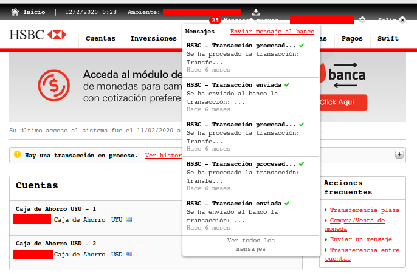
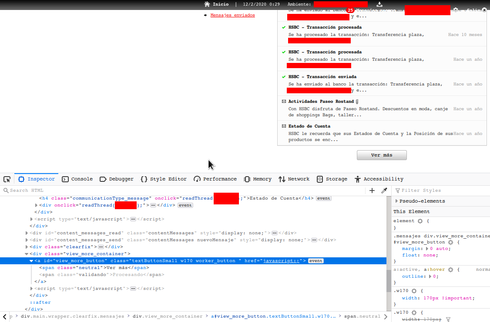
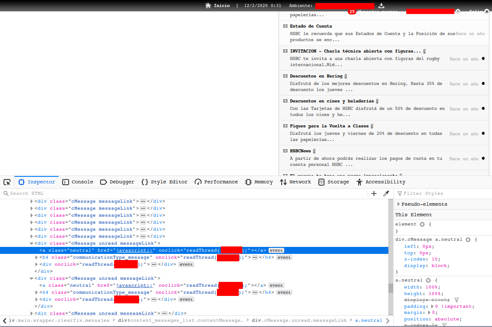
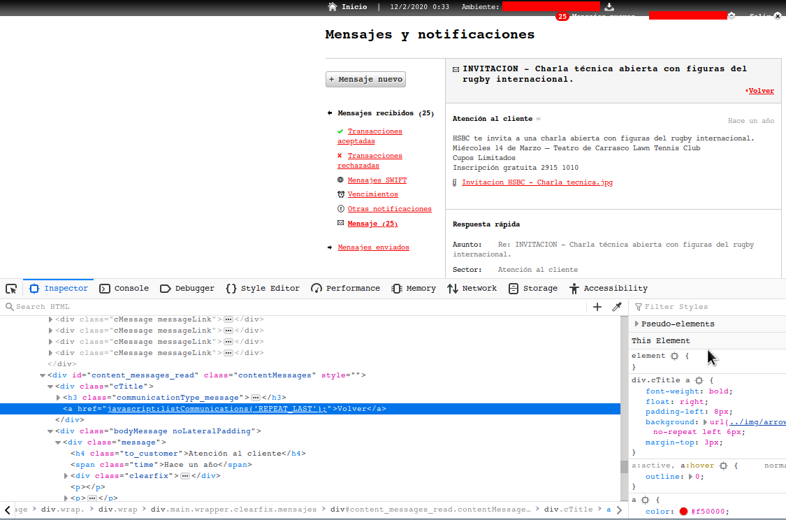

Seguro que los usuarios del sitio web del banco HSBC (Uruguay) ya se dieron cuenta de lo incómoda que es la funcionalidad de mensajes de la página web:

- Se envía una cantidad excesiva de propaganda como mensajes; aunque puede cambiarse en las preferencias luego de que nos damos cuenta (y nos contactamos con el banco al respecto), el problema es si ya fueron enviados muchos mensajes como es mi caso.
- Para leer los mensajes hay que entrar a cada uno; no hay forma de seleccionar varios a la vez y marcarlos todos como leídos (también confirmado con el banco).
- El scrolling de los mensajes se hace mediante un botón de Ver más, que carga algunos mensajes más por vez, pero que cuando se vuelve luego de seleccionar un mensaje debe escrolearse nuevamente.
De lo anterior me encuentro con que tengo muchos mensajes, tengo que entrar a cada uno para marcarlo como leido y luego de volver a la lista de mensajes tengo que presionar más de siete veces el botón de Ver más para llegar a los mensajes no leídos.
Ya que perdí unos cuantos minutos marcando como leídos los mensajes más recientes, al momento de hacer lo mismo con los mensajes de más de un año me encontré con que no me iba a llevar un tiempo razonable hacerlo.
Por suerte intenté probar utilizando javascript para marcar los mensajes como leídos aprovechando que el sitio utiliza jquery, obteniendo los siguientes snippets de código:
- Realizar scrolling del listado de mensajes
$('.view_more_container a')[0].click(); - Hacer click en un mensaje no leído
$('.unread a')[0].onclick() - Volver a la lista de mensajes
$('div.cTitle h3.communicationType_message').next()[0].click()
A partir de los snippets anteriores y utilizando la función setTimeout para esperar unos segundos por los cambios realizados en la página realicé el siguiente programa para marcar como leídos todos los mensajes:
function click_unread() {
var unreads = $('.unread a');
if (unreads.length > 0) {
unreads[0].onclick()
setTimeout(click_back, 1000);
} else {
var viewmore = $('.view_more_container a');
if (viewmore.length > 0) {
viewmore[0].click();
setTimeout(click_unread, 1000);
}
/* else end */
}
}
function click_back() {
var back = $('div.cTitle h3.communicationType_message').next();
if (back.length > 0) {
back[0].click();
setTimeout(click_unread, 1000);
} else {
setTimeout(click_back, 1000);
}
}
click_unread();
Se tienen dos funciones:
click_unread, que realiza un scroll en la página de listado hasta encontrar un mensaje no leído para clickearlo yclick_back, que vuelve al listado.
En el caso de click_back se encontró que un segundo en algunos casos no
alcanzaba para que se renderizara completamente la página (el link a Volver),
por lo que se utilizó la llamada setTimeout(click_back, 1000); para asegurarse
de encontrar dicho elemento.
Notar que la ejecución del programa debe realizarse desde la consola javascript en la página con el listado de los mensajes.
Hay que tener en cuenta que el programa anterior funciona ya que no se está cargando una nueva página, sinó que el contenido se está modificando mediante javascript.
En resumen, gratamente sorprendido de los resultados obtenidos.